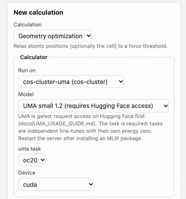
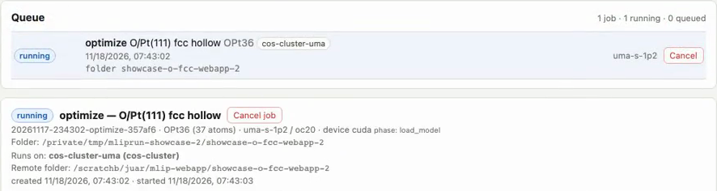
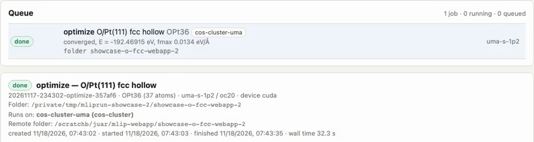

Reaction path and TS check
image –
Full command as run
Machine-learning interatomic potentials from one command: relaxations, committees, NEB with a transition-state check, MD, and jobs sent to a remote GPU machine you add yourself.
Install: pip install -e ".[neb]", then mlip doctor
Plate 1. O on Pt(111), ; real runs on (one GPU card). Hover a command for its run record.
image –
Full command as run
step –
Full command as run
Full command as run
Static structure, not a simulation
What ran so far



Job command the web app ran on the cluster
Data: showcase data pack and its provenance record.